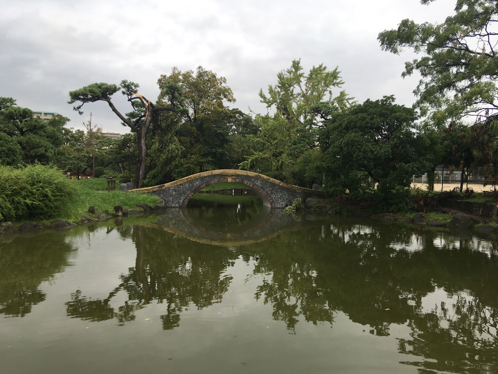

Zobacz Osakę
Zamek Osaka
Jeden z najbardziej znanych zamków w Japonii. Odegrał znaczną rolę podczas jednoczenia kraju w XVI w., w okresie Azuchi-Momoyama. Został zbudowany na dwóch nasypach z ziemi i ciosanych kamieni oraz otoczony fosą. Główny budynek ma osiem pięter, z czego tylko pięć jest widocznych z zewnątrz, dodatkowo posiada wysoki fundament z kamienia, który miał bronić mieszkańców przed atakami uzbrojonych w miecze najeźdźców.
Park Sumiyoshi
Park w dzielnicy Suminoe, w Osace, w Japonii. Najstarszy park w Osace, otwarty w 1873 roku. Był niegdyś częścią chramu shintō Sumiyoshi-taisha. Jest obecnie parkiem miejskim z klombami, stawami, placami zabaw i kortami.
Świątynia buddyjska Shitenno-ji

Jedna z najstarszych w Japonii, założona w 593 roku przez księcia Shōtoku, który wspierał wprowadzenie buddyzmu do Japonii.
Dotonbori

Dzielnica teatrów, kabaretów, restauracji z lokalnymi potrawami, klubów karaoke, kasyn i salonów gier. Znajduje się tu jedno z największych na świecie podziemnych centrów handlowo-usługowych i labirynty krytych pasaży handlowych. W Dōtonbori fasady budynków ozdobione są fantastycznymi reklamami mechanicznymi, a wejścia restauracji, klubów i salonów gier otoczone gigantycznymi, podświetlanymi maskami i rzeźbami.